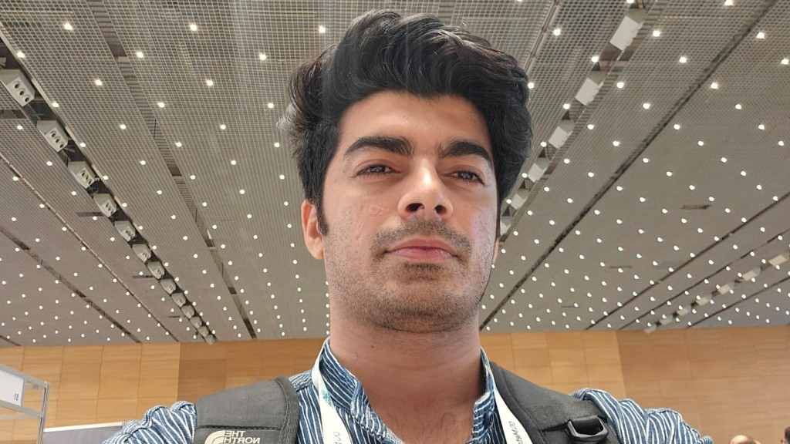
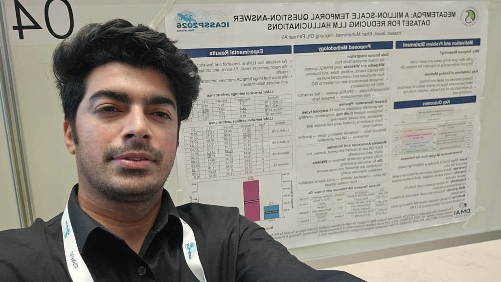

Doctoral researcher · Computer Science and Engineering, Sungkyunkwan University, South Korea
Haseeb Javed
I design language-model systems for medicine and mental health , including privacy-preserving clinical consultation, parameter-efficient adaptation, and robustness of medical machine-learning systems. Published work includes MediGuard, Adaptive Consent, and surveys of medical-model robustness and large language models.
Full bio ↽
Clinical LLMs
Privacy & consent
PEFT / LoRA
Robustness
Mental-health NLP


Biography
Haseeb Javed is a doctoral researcher in Computer Science and Engineering at Sungkyunkwan University (SKKU), South Korea, working with Professor Farman Ali. His research focuses on large language models for healthcare, including privacy-preserving clinical consultation, parameter-efficient adaptation (PEFT / LoRA), and robustness of medical machine-learning systems.
He holds an M.S. in Electrical Engineering and a Master of Project Management from Muhammad Nawaz Sharif University of Engineering and Technology, Multan, and a B.S. in Electrical Engineering from the University of Engineering and Technology, Taxila.
Published work appears in IEEE Journal of Biomedical and Health Informatics, Artificial Intelligence Review, Journal of Big Data, the AAAI Symposium Series, IEEE Access, Computing, Sensors, and Energies.
💼 Experience
2022 — Present
Researcher
Sungkyunkwan University (SKKU), South Korea
Doctoral research on language models, retrieval, and robust machine learning, with Professor Farman Ali.
2023
Teaching Assistant, Computing and Informatics
Sungkyunkwan University (SKKU), South Korea
Undergraduate and graduate support in algorithms, data structures, and machine-learning foundations.
2019 — 2021
Research Assistant
Muhammad Nawaz Sharif University of Engineering and Technology, Multan
Energy systems and AI integration under Dr. Hafiz Abdul Muqeet, including campus-microgrid studies later published in Energies and Sensors.
🎓 Education
2022 — Present
Ph.D. Computer Science and Engineering
Sungkyunkwan University, South Korea
Ongoing.
2020 — 2021
M.S. Electrical Engineering
MNS UET Multan, Pakistan
Energy-management systems and machine learning for microgrids.
2019 — 2021
Master of Project Management
MNS UET Multan, Pakistan
2014 — 2018
B.S. Electrical Engineering
University of Engineering and Technology, Taxila, Pakistan
🏆 Awards & Honors
Sungkyunkwan University Full Academic Scholarship
Sungkyunkwan University, South Korea
BK21 Research Scholarship
Sungkyunkwan University, South Korea
🧑⚖️ Academic Service
Conference Reviewer
WWW 2026 — The Web ConferenceACCV 2026 — Asian Conference on Computer VisionAAMAS 2026 — International Conference on Autonomous Agents and Multiagent Systems
Journal Reviewer
Expert Systems with Applications
Pattern Recognition
Applied Soft Computing
Engineering Applications of Artificial Intelligence
Alexandria Engineering Journal
Renewable Energy
Renewable and Sustainable Energy Reviews
Sustainable Computing: Informatics and Systems
Annals of Operations Research